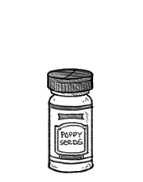

poppy seeds
Poppy seeds are oilseeds that come from the Papaver somniferum which also produces Opium. Compared to the seed pod and straw, the seeds contain very low levels of opiates. Since poppy seeds are relatively expensive, they are sometimes mixed with the seeds of Amaranthus paniculatus, which closely resemble poppy seeds. Poppy seeds are a source of calcium, iron and zinc.
The seeds are used whole or ground into meal, to be used in pastry and bread or to make poppyseed oil. It is also used to make poppy seed pasta, a sweet filling. The poppy seed harvest can be a by-product of cultivation of Papaver somniferum for opium, poppy straw, or both opium and poppy straw.